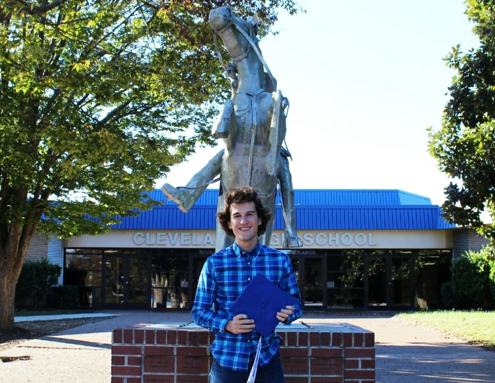

About Me
Education
I graduated from Cleveland High School in Cleveland, TN, where I developed my interest in engineering, science, and mathematics. My first interaction with basic programming was in my Engineering Applications class where I learned basic ladder logic on a Siemens PLC trainer that controlled an assembly line. Besides a small exposure to a beginner robotics language, I did not have much experience with applicable Computer Science languages. Since my transition from majoring in Mathematics to Computer Science: Cyber Security during my first freshman semester at the University of Tennessee at Chattanooga, I have developed a strong use and understanding of Java, Python, and object-oriented programming through my college courses. I exposed myself to HTML, CSS, and JavaScript while creating this website, and have taken informal online courses in those languages to enhance my knowledge. I am currently a junior at UTC and cannot wait to see where opportunities might take me.
Hobbies and Involvement
If you know me at all, you will know that I'm constantly swimming and riding my road bike. And to no surprise, I am the vice president of the UTC swim club and a member of the UTC cycling club, which is how I spend most of my time at UTC. I am a member of two Honor Societies at UTC: Alpha Lambda Delta and Phi Eta Sigma. I, also, train with UTC's Cyber Defense Team: MocSec. We practice both offensive and defensive cybersecurity, and I hope to compete in my first competition soon.
Work Experience
In highschool, summer 2017 and 2018 I worked as a lifeguard and assistant manager of three pools in the Cleveland City area. This job developed my social and problem solving skills, and it taught me how to make calm and swift decisions while under pressure. Summer 2020 I worked as a Cabin Counselor at Camp Lakewood in Potosi, Missouri. Being responsible for children every day and night definitlely taught me patience, kindness, and enthusiasm, even when I was drained of energy. Around August 2020, my friend Abbey Sutherland, who is the CEO and Founder of Hope's Haven asked me to create a website for her wonderful non-profit. Developing that website challenged me as a programmer and sprung up a passion as a website and software developer. In December 2020 - April 2021, I participated in paid Cyber Security Research at UTC under the direction of Dr. Mengjun Xie. I developed a back-end Python program that automatically scheduled tasks as directed by the user. This opportunity helped me experience working on a full software development team, enhance my knowledge in Python and SQL, and further understand operating on a Linux system. From May to August 2021, I had my first experience in industry as an IT intern for Plastic Omnium. Plastic Omnium is a multi-billion dollar coorporation that manufactures bumpers and tailgates for car manufacturers such as VolksWagen. As the IT intern, I directly assisted the head IT Engineer in the Chattanooga Plant. I provided on-site IT solutions to the site's office and plant floor, and I remotely supported the full IT team located around the United States. All of these amazing opportunities have development me both as a person and a professional, and I cannot wait for what is in store for me ahead.